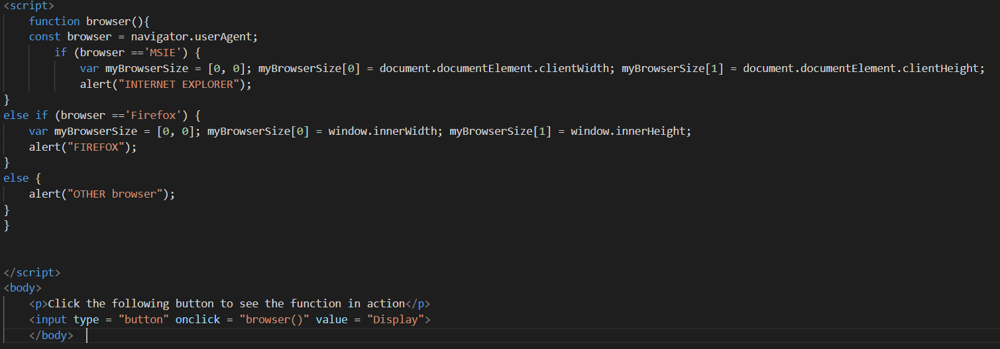
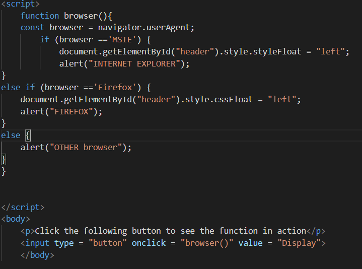

JavaScript running different on browsers
Different browsers read and process the JavaScript differently which means that the script may work differently depending on the browser you are using this is since different browsers use a different Java engine Which is the reason why they process the JavaScript slightly differently. For example some engines use different command words this means that you have to use a different command depending on what browser you are using.
Getting the Veiwport Size
This is the code which can be used to get the size of the viewport when I run it on Internet explorer it works however when I try to run it on Firefox is does not work:
var myBrowserSize = [0, 0]; myBrowserSize[0] = document.documentElement.clientWidth; myBrowserSize[1] = document.documentElement.clientHeight;
To fix this error you must change the command sincedocument.documentElement.clientWidth
Is the correct command to use for the internet explorer browser however it does not work in fire fox since Firefox uses a different command which is window.innerWidth
This means what I must do is create JavaScript which detects what browser the user is on and if it is Firefox then it will run the script with the Firefox command and if it is internet explorer it will then run the script with the internet explorer command
Bellow is an example of the code which works as well as a button which runs that code:
This runs the code which gets the Veiwport of the Browser and will select what code is needed to be used based on what browser you are using
Changing the CSS float property of a HTML element
Changing the CSS float property of a HTML element below is the code which works on Itnernet explore:
document.getElementById("header").style.styleFloat = "left";
However this code will not work on Firefox due to the fact that it uses a different command that so the code which will work on the Firefox browser:
document.getElementById("header").style.cssFloat = "left";
This works because it used the Firefox command style.cssFloat
Rather than the command which works on internet explorer which is style.styleFloat
To make the script work on both FireFox and Internet explore I will need to have browser detection then I will have to select what code is to be used based on what browser is being use bellow is that code:
Click this button to run the code above